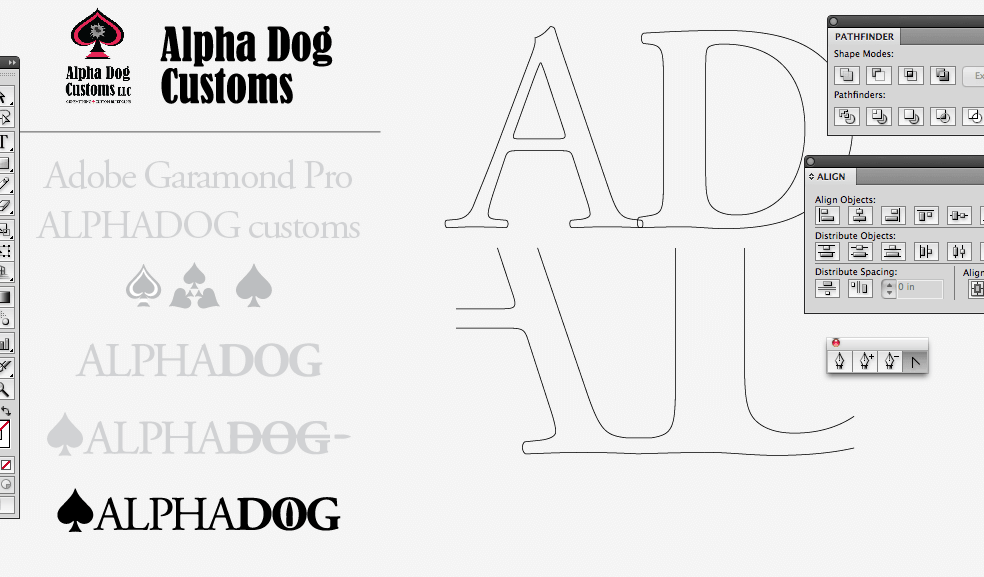
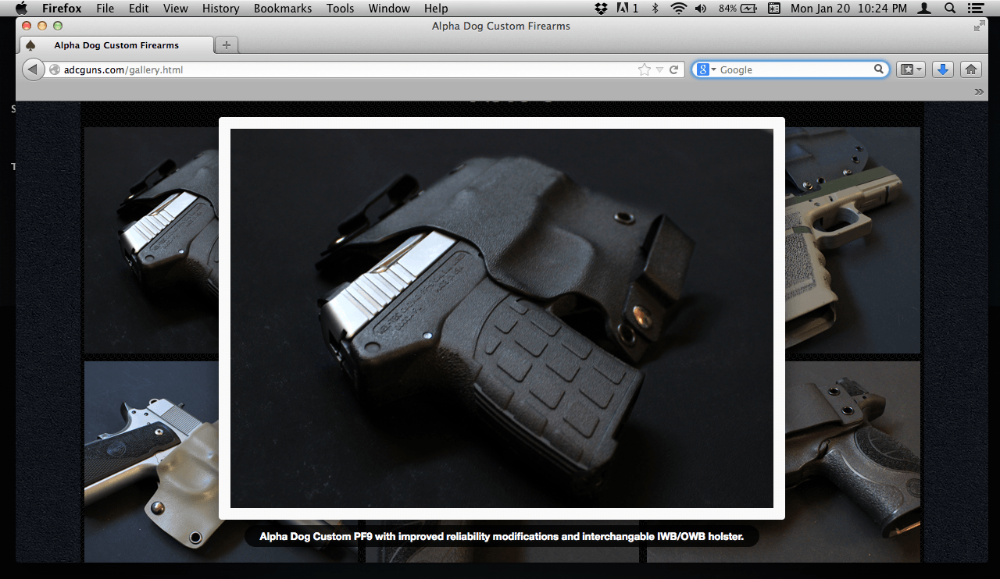
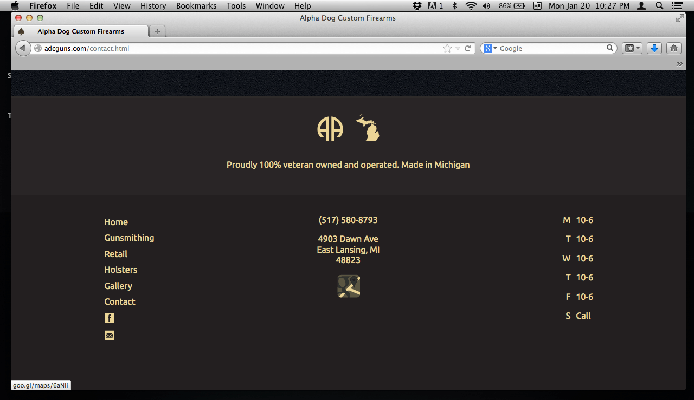
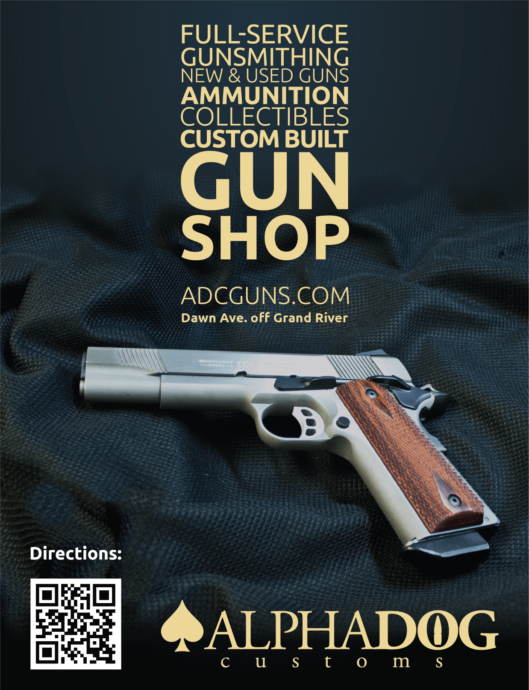

Born & Raised.
© 2014 | this website is 100%, lovingly hand-coded by Chris Jefferies
About this Project:
I was tasked to design a brand around the existing infrastructure for this 3 year old business, taking into account the original, owner-designed logo, budget and core customer base. The solution combined a traditional wordmark cast in the Garamond typeface with Ubuntu for a modern, workhorse typeface. Capped with an edgy set of stationery, color definitions for experience and signage design, and a clean brochure website, the project ultimately combined finesse and function, much like the hand carved works of art that exemplify the owner.
Live at: adcguns.com
The typeface, custom ligature and icons surrounding the brand were designed to reinforce the feeling of traditional, handcrafted wares in a subtle way.
Along the way, I was also tasked with lighting and photographing some of the products on hand. A simple jQuery lightbox was perfect for their display.
 This ad was designed to adorn the bathroom walls of local sports bars, restaurants, and other establishments. Not exactly the prestige I'd hoped for as an idealistic freshman, but... it's that kind of gun shop. Fun fact: the back drop shown here is actually the heavily photoshopped liner of the hoodie I was wearing that day.

Born & Raised.
© 2014 | this website is 100%, lovingly hand-coded by Chris Jefferies